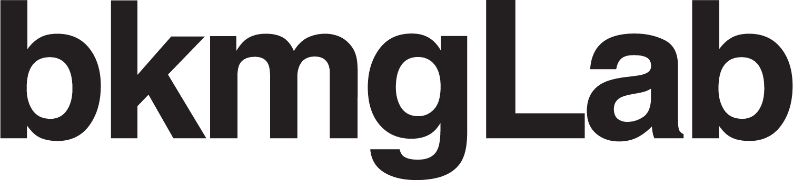


FIRE OVEN
450°C 가능한 전기 화덕 오븐
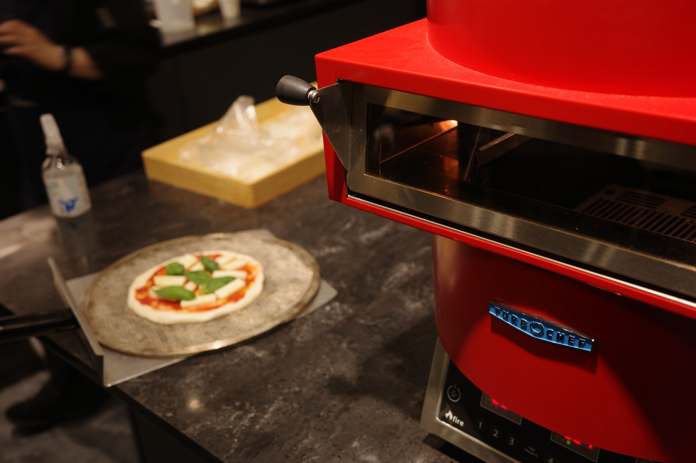

TURBOCHEF FIRE OVEN
90초 안에
피자 한 판이
가능하다고?
외식 시장에서 가장 빠르게 성장하는 카테고리,
이제 프랜차이즈가 그 파도에 올라탈 차례입니다.
후드 불필요
장작 불필요
숙련된 셰프 불필요
안녕하세요, 비케이엠지의 데이비드입니다. 오늘 소개해드릴 TurboChef Fire 오븐은 단 90초 만에 정통 나폴리 피자를 구워내는 장비입니다. 핵심은 속도만이 아닙니다. 후드도, 장작도, 숙련된 피자이올로도 필요 없습니다. 나폴리 피자 프랜차이즈를 가로막던 병목을 이 한 대가 해결합니다. 오늘 그 이야기를 차근차근 풀어보겠습니다.
THE OVEN
TurboChef Fire Oven
Ventless Countertop Power
누구나 450°C로 굽는 아티장 피자
TurboChef Fire는 카운터탑에 올려 쓰는 전기 화덕 오븐입니다. 후드 없이 설치할 수 있고, 450°C의 고온을 장시간 안정적으로 유지합니다. 주문이 몰리는 피크 타임에도 일정한 품질로 빠르게 구워냅니다. 북미의 나폴리 스타일 피자 체인 브랜드에서는 이미 표준 장비로 자리 잡았고, 아시아에서도 빠르게 확산되고 있습니다. 활용 범위가 넓어, 피자 전문점이 아니어도 최고급 나폴리 스타일 피자를 낼 수 있습니다.
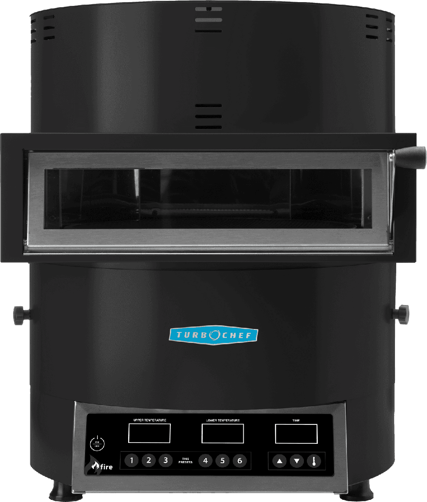
바로 이 제품, TurboChef Fire 오븐입니다. 핵심 숫자만 보시죠. 90초면 피자가 완성됩니다. 상하단 히터가 각각 450도까지 올라갑니다. UL 인증 촉매 변환기를 내장해 후드가 필요 없고, 전기 구동이라 장작도 필요 없습니다. 앞에서 말씀드린 네 가지 병목을 이 한 대가 그대로 지워버립니다. 다음 장에서 각 스펙이 어떤 문제를 푸는지 하나씩 설명드리겠습니다.
PRODUCTS
요즘 파이어 오븐으로 만들어지는 인기 메뉴
나폴리 피자
90초 완성 · 450°C 상하단 동시 가열로 굽는 정통 도우
빠누쪼 (Panouzzo)
피자 도우로 감싼 샌드위치 · 객단가를 높이는 새 메뉴 카테고리
마르게리타·마리나라 같은 클래식부터 트러플·고르곤졸라·매콤한 엔두야(’Nduja)까지 — 토핑 하나로 메뉴가 무한히 확장됩니다. 정통 나폴리 피자는 한국에서 가장 빠르게 크는 외식 카테고리로, 매장마다 웨이팅을 만들어내고 있습니다.
모차렐라·프로슈토·루꼴라부터 햄·치즈, 매콤 불고기까지 속을 자유롭게 채우는 ‘들고 먹는 나폴리 피자’. 카페·베이커리·팝업·배달까지 빠르게 번지며 객단가를 끌어올리는 새로운 무기로 떠오르고 있습니다.
Fire 오븐 한 대로 두 가지 무기를 동시에 갖출 수 있습니다. 왼쪽은 누구나 아는 정통 나폴리 피자, 90초면 완성됩니다. 오른쪽 빠나우초는 피자 도우로 속재료를 감싼 샌드위치형 메뉴로, 같은 오븐에서 전혀 새로운 메뉴 카테고리를 만들어냅니다. 한 대의 장비로 두 개의 매출원을 확보한다는 점, 먼저 강조드립니다.
HOW IT WORKS
파이어 오븐 사용법
숙련된 셰프가 없어도 됩니다. 누구나, 첫날부터 — 단 4단계면 끝.
01
도우를 편다
피자든 빠누쪼든, 무엇이든 좋습니다. 220g·180g·120g·90g — 가지고 있는 어떤 도우 볼이든 그대로 펴기만 하면 됩니다.
02
스크린에 올린다
토핑이나 속재료를 얹고, 피자 스크린 위에 그대로 올립니다.
03
오븐에 넣는다
오븐에 넣고 프리셋 타이머만 누르세요. 수분율 60% 이상의 고수분 도우라면 약 90초면 완성됩니다.
04
꺼낸다
타이머가 끝나면 꺼내기만 하면 완성. 이게 전부입니다.
사용법은 정말 단순합니다. 첫째, 도우를 폅니다. 피자든 빠누쪼든 상관없고, 220g·180g·120g·90g 어떤 도우 볼이든 됩니다. 둘째, 피자 스크린 위에 올립니다. 셋째, 오븐에 넣고 프리셋 타이머만 누릅니다. 넷째, 꺼냅니다. 끝입니다. 숙련된 피자이올로가 없어도, 누구나 첫날부터 같은 품질을 냅니다.
SPECS
스펙으로 보는 파이어 오븐
01
상하단 450°C 독립 히터
위아래에서 동시에 가열해 피자가 고르게 익습니다. 셰프가 계속 들여다보지 않아도 됩니다.
02
UL 인증 촉매 변환기
연소 가스를 완전히 정화해 후드 없이 설치할 수 있습니다. 인테리어 공사비를 크게 줄여줍니다.
03
전기 구동 · 208/240V 단상
208/240V 단상 전원만 있으면 가동합니다. 연료를 조달하고 보관하는 번거로움이 사라집니다.
04
컴팩트 풋프린트
카운터탑에 올려 쓰는 컴팩트한 크기로, 기존 화덕보다 설치 공간이 훨씬 줄어듭니다.
05
6단 프리셋 · 최대 14인치
메뉴별 굽기를 저장해 누가 구워도 같은 품질을 냅니다. 최대 14인치 도우까지 한 번에 굽습니다.
06
치수 · 무게
쿡 캐비티 14.75″(375mm) · 오븐 높이 22.7″(577mm) · 무게 75 lbs(34kg).
이제 스펙을 영업 언어로 풀어보겠습니다. 상하단 독립 히터는 균일한 굽기를 보장해 숙련공 의존도를 낮춥니다. UL 인증 촉매 변환기는 후드 없는 설치를 가능하게 해 공사비를 줄입니다. 전기 구동은 연료 문제를 없애고, 컴팩트한 풋프린트와 75파운드 무게는 좁은 매장에도 들어갑니다. 6단 프리셋은 누가 구워도 같은 품질을 냅니다. 스펙 하나하나가 비용 절감과 표준화로 직결됩니다.
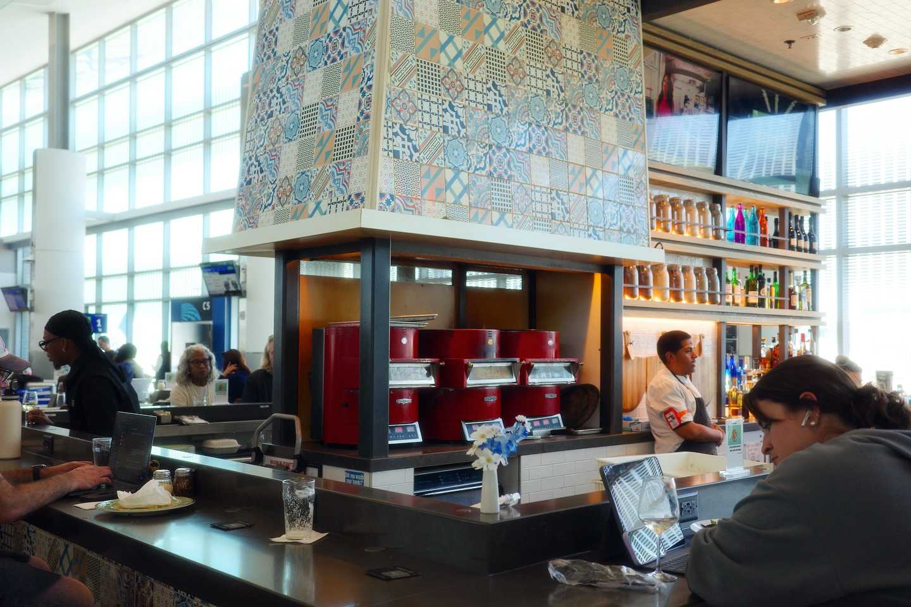
VENTLESS
후드가 필요 없는 무배기 오븐

UL LISTED · cULus
촉매 변환기 정화 성능 공식 인증
파이어 오븐은 별도의 후드나 덕트 환기 설비가 전혀 필요 없는 진짜 무배기(Ventless) 오븐입니다. 오븐 뒷면의 촉매 변환기(Catalytic Converter)가 조리 중 발생하는 연기와 연소 가스를 그대로 들이마실 수 있는 깨끗한 공기로 정화합니다.
이 정화 성능은 UL 인증으로 입증되었습니다. 실제로 환기와 설비 기준이 가장 까다로운 공항 내 레스토랑에서도 사용되고 있습니다.
이 슬라이드의 핵심은 '후드가 필요 없다'입니다. 파이어 오븐은 진짜 무배기 오븐으로, 후드나 덕트 같은 환기 설비가 전혀 필요 없습니다. 오븐 뒷면의 촉매 변환기가 조리 연기와 연소 가스를 사람이 그대로 마실 수 있는 깨끗한 공기로 정화하며, 이 성능은 UL 인증으로 공식 입증되었습니다. 환기 기준이 가장 까다로운 공항 레스토랑에서도 운영될 만큼 검증된 기술입니다. 후드 공사가 불가능하거나 비용이 큰 공간일수록 이 오븐의 가치가 커집니다.
MARKET
왜 지금인가? 한국 나폴리 피자 시장
- 피자는 한국에서 이미 검증된 외식 카테고리입니다.
- 그중에서도 정통 나폴리 스타일이 가장 빠르게 성장하고 있습니다.
- 전국 주요 상권에 나폴리 피자 전문점이 빠르게 늘고 있습니다.
- 관련 검색량과 매장 수는 최근 5년간 약 3배로 늘어난 것으로 추정됩니다.
나폴리 피자 관심도 지수 · 2019 = 100
자체 시장 조사 기반 추정치 (Naver 검색·매장 데이터 종합)
질문은 늘 같습니다. 왜 지금이냐. 피자는 한국에서 이미 검증된 외식 카테고리이고, 그 안에서 정통 나폴리 스타일이 가장 빠르게 성장하고 있습니다. 오른쪽 그래프는 네이버 검색량과 매장 데이터를 종합해 산출한 관심도 지수로, 2019년을 100으로 봤을 때 최근 약 3배 수준까지 올라왔습니다. 추정치임을 분명히 말씀드리지만, 방향성은 명확합니다. 시장은 지금 열리고 있습니다.
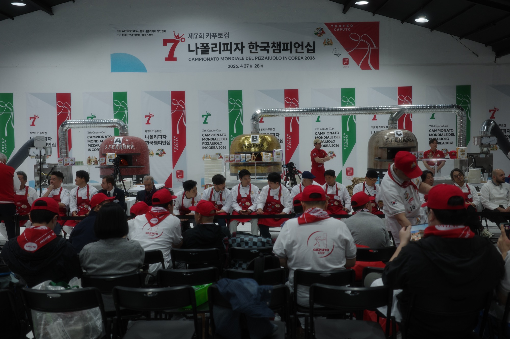
MOMENT
한국 피자의 역사적 순간
금메달
이탈리아 카푸토 컵 · CAPUTO CUP
포폴로 피자(Popolo Pizza)의 셰프가 이탈리아 카푸토 컵에서 금메달을 받았습니다. 이탈리아인이 한국에 와서 김치 담그기 대회에서 우승한 것과 같은, 전례 없는 일입니다. 그리고 이 순간이 한국 나폴리 피자 붐의 시작이 되었습니다.
제7회 카푸토컵 · 나폴리피자 한국챔피언십 (2026)
이 슬라이드는 시장 분위기를 가장 잘 보여주는 사건입니다. 포폴로 피자의 셰프가 피자의 본고장 이탈리아에서 열린 카푸토 컵에서 금메달을 받았습니다. 쉽게 비유하면, 외국인이 한국에 와서 김치 담그기 대회에서 우승한 격입니다. 그만큼 상징적인 사건이고, 한국 나폴리 피자 붐의 신호탄이 됐습니다. 시장이 무르익었다는 증거입니다.
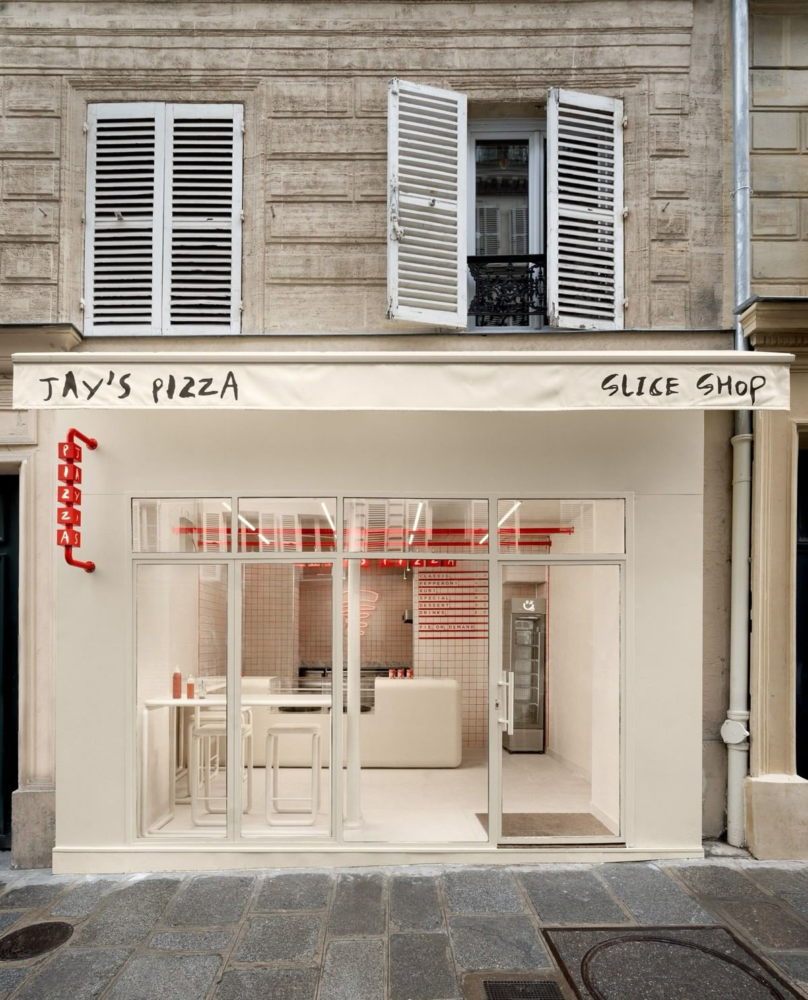
PROBLEM
근데 왜 아직 나폴리 피자 프랜차이즈가 많이 없을까?
피자 수요는 빠르게 커지고 있지만, 매장 확산은 그 속도를 따라가지 못했습니다. 아래 네 가지 한계가 나폴리 피자의 대중화를 가로막아 왔기 때문입니다.
01
대형 장작 화덕
엄청난 공간과 고가의 설비 투자
₩2,000만~5,000만+
02
후드·환기 시스템
복잡한 공사와 높은 초기 비용
₩800만~2,300만
TurboChef Fire는 이 네 가지 병목을 한 번에 해결합니다. 대형 장작 화덕 대신 카운터탑 전기 오븐으로, 후드 공사 없이 UL 인증 촉매 변환기로, 장작·가스 없이 전기로, 숙련된 피자이올로 없이 프리셋 버튼만으로 누구나 첫날부터 같은 품질을 냅니다.
그렇다면 왜 아직 나폴리 피자 프랜차이즈가 없었을까요. 답은 네 가지 병목입니다. 첫째 대형 장작 화덕, 둘째 후드와 환기 공사, 셋째 장작·가스 연료 관리, 넷째 숙련된 피자이올로 채용. 이 네 가지가 매장 확장을 가로막아 왔습니다. 프랜차이즈의 핵심은 표준화와 복제인데, 이 요소들은 전부 표준화와 거리가 멉니다. 그런데 이 모두를 해결한 오븐이 있습니다.
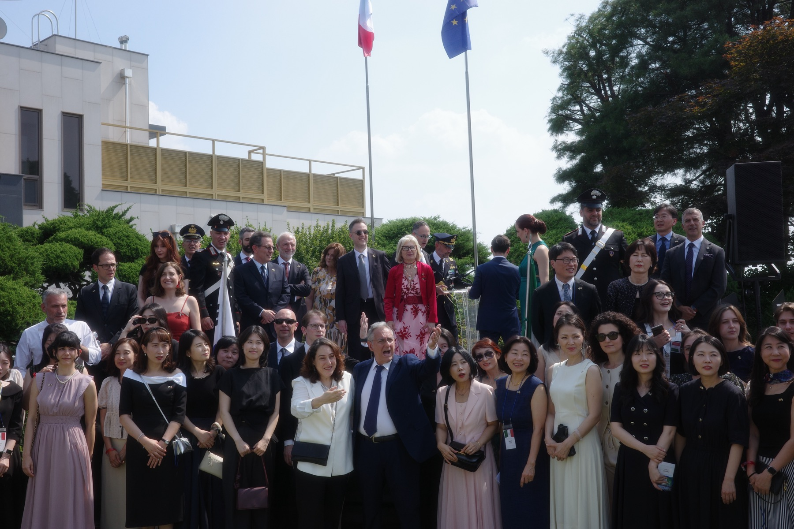

PROOF
실전 검증: 이탈리아 대사관 국경일
비케이엠지는 매년 이탈리아 대사관 국경일 행사에 초청되어 야외에서 오븐을 운영합니다. 하루 종일 도어가 쉴 새 없이 열리는 혹독한 환경에서도 Fire 오븐은 높은 온도를 안정적으로 유지했습니다. 연속 사용 시 온도가 떨어지는 다른 오븐들과는 분명히 다릅니다.
이건 카탈로그 스펙이 아니라 실전 데이터입니다. 저희는 매년 이탈리아 대사관 국경일 행사에 초청되어 야외에서 오븐을 운영합니다. 1,200명의 게스트에게 단 5시간 만에 1,000판의 피자를, Fire 오븐 4대로 구워냈습니다. 야외에서 도어가 종일 열리는 가장 가혹한 조건에서도 온도는 안정적으로 유지됐습니다. 연속 사용하면 온도가 떨어지는 다른 오븐들과는 확실히 다릅니다.
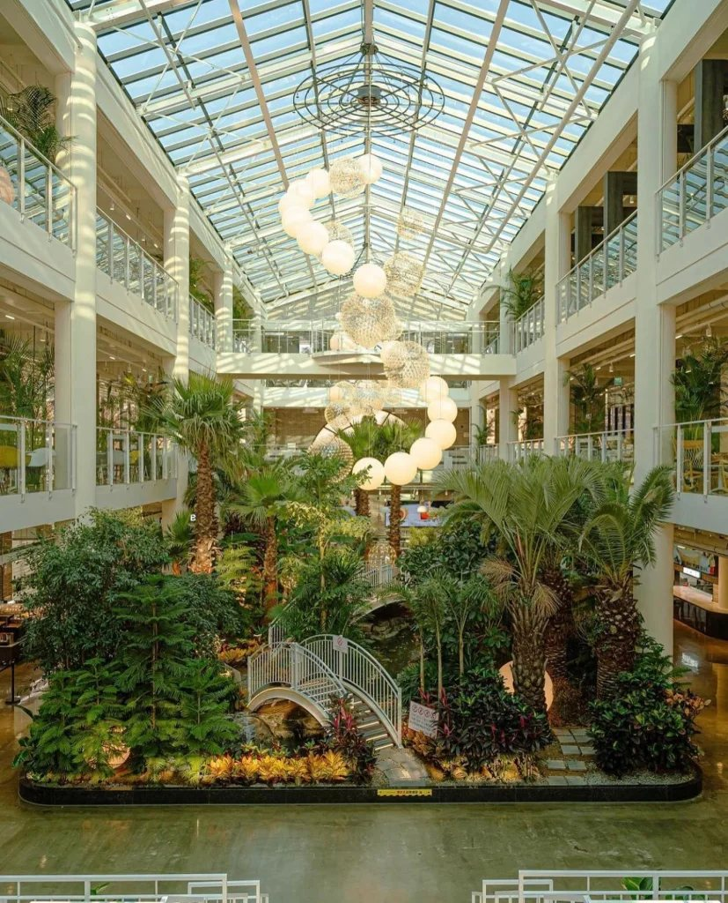
CAFÉ
카페
대형카페 · 카페 · 베이커리. 디저트를 넘어, 피자로 객단가를 높입니다.
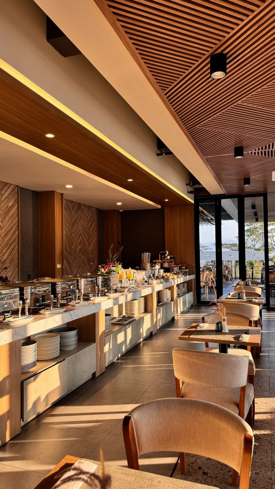
HOTEL · RESORT
호텔 · 리조트
뷔페와 컨셉 레스토랑의 라이브 스테이션에서 즉석 나폴리 피자를 제공합니다.
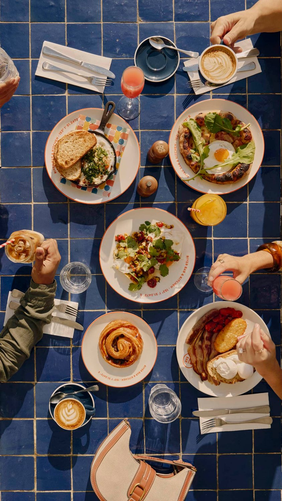
RESTAURANT
레스토랑
이탈리안 · 웨스턴 · 브런치. 주방 제약 없이 프리미엄 나폴리 피자를 메뉴에 더합니다.
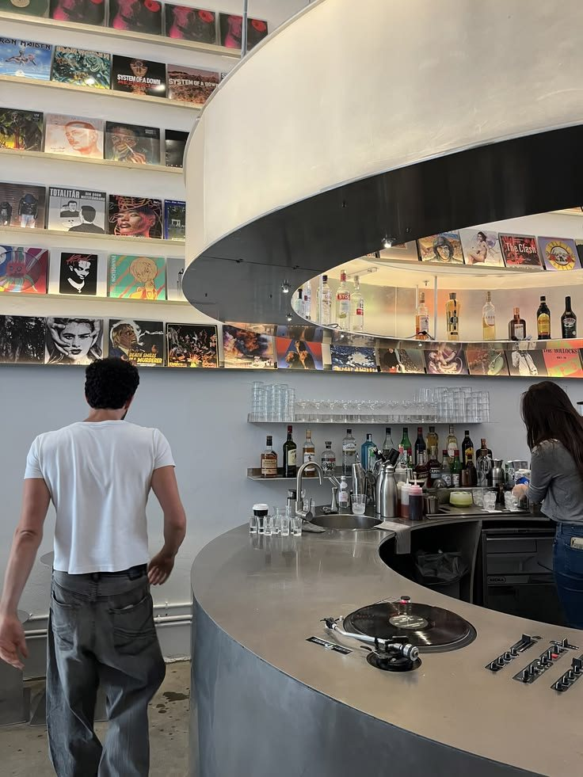
ENTERTAINMENT
엔터테인먼트
라운지 · LP바 · 페스티벌 · 팝업. 공간을 가리지 않고 빠르게 운영합니다.
WHO IT'S FOR
가장 많이 찾는 4가지 업종
우리 오븐을 가장 많이 찾는 곳은 크게 네 업종입니다. 첫째 카페 — 대형카페와 베이커리가 디저트를 넘어 피자로 객단가를 올립니다. 둘째 호텔과 리조트 — 뷔페와 컨셉 레스토랑의 라이브 스테이션으로 활용합니다. 셋째 레스토랑 — 이탈리안, 웨스턴, 브런치처럼 프리미엄 피자를 넣고 싶지만 주방 여건이 안 되던 곳들입니다. 넷째 엔터테인먼트 — 라운지, LP바, 페스티벌, 팝업까지 공간을 가리지 않습니다.
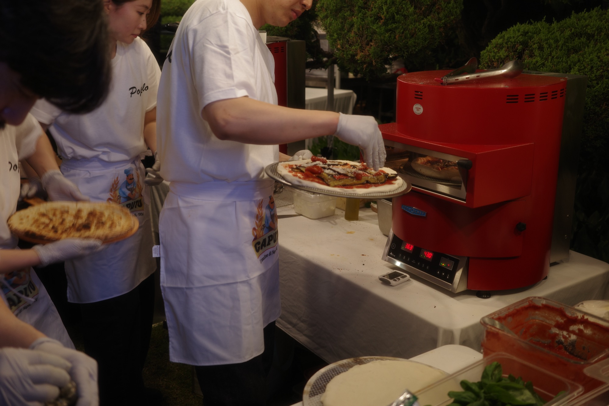
POP-UP VENUES
식당, 카페, 백화점, 전시장…
후드도, 환기 설비도, 넓은 주방도 필요 없습니다. 그래서 Fire 오븐은 설비와 공간 제약이 큰 백화점·컨벤션홀 안에서도 팝업을 열 수 있습니다. 일반 화덕이 들어갈 수 없는 공간일수록, 이 오븐의 가치는 더 커집니다.
이 슬라이드의 핵심은 '어디든 들어간다'입니다. Fire 오븐은 후드와 환기 설비가 필요 없고 카운터탑에 올라가는 크기라, 일반 화덕이 절대 들어갈 수 없는 공간에서도 팝업을 열 수 있습니다. 그 결과 현대백화점 판교, 신세계 강남, 갤러리아 압구정 같은 최고급 백화점부터 코엑스, 부산 벡스코, 킨텍스 같은 대형 컨벤션홀까지, 가장 까다로운 공간들이 저희를 초대했습니다. 설비 제약이 큰 곳일수록 이 오븐의 가치가 커집니다. PAZAC, 본플뢰르 같은 브랜드와도 팝업을 함께했습니다.
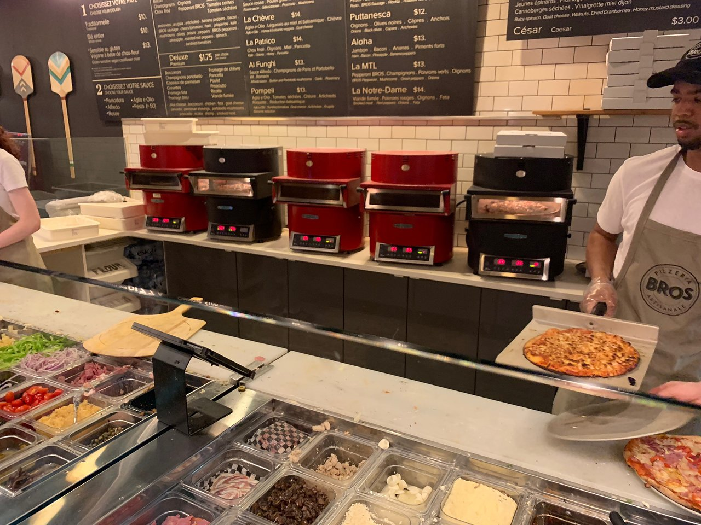
FRANCHISE IDEA
The Subway of Pizza
피자계의 서브웨이 — 스피드와 피자가 처음 만나다
캐나다의 Pizzeria Bros는 매장마다 Fire 오븐 5대를 두고, 패스트푸드처럼 빠른 아티장 피자를 선보이며 북미를 빠르게 사로잡고 있습니다. 주문부터 완성까지 4분 이내. 손님은 난생처음 자신의 피자가 눈앞에서 구워지는 과정을 지켜봅니다. 지금까지 피자는 최소 15~20분을 기다려야 하는 음식이었지만, 이제는 프리미엄과 스피드를 동시에 잡습니다. Fire 오븐은 가장 바쁜 러시아워도 거뜬히 감당합니다.
여기서 한 가지 영감을 드리겠습니다. 캐나다의 Pizzeria Bros는 매장마다 Fire 오븐을 다섯 대씩 두고 '피자계의 서브웨이'를 만들고 있습니다. 주문부터 완성까지 4분 이내, 손님이 자기 피자가 눈앞에서 구워지는 걸 처음으로 지켜봅니다. 지금까지 피자는 15분, 20분씩 기다리는 음식이었죠. 이제는 프리미엄과 스피드를 동시에 잡습니다. 그리고 Fire 오븐은 가장 바쁜 러시아워도 감당합니다. 이게 바로 다음 프랜차이즈의 기회입니다.
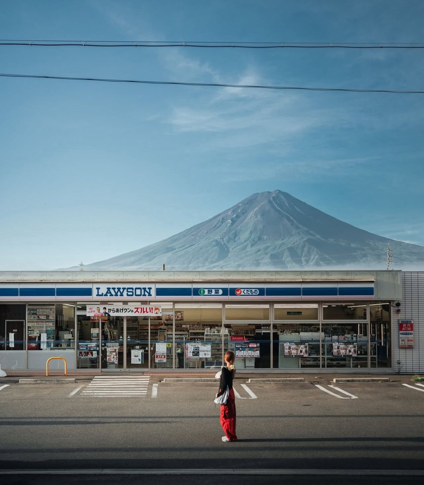
FRANCHISE IDEA
Donut Pizzas / Mini Pizzas
일본에서 시작된 새로운 피자 트렌드, 한국에 상륙하다
친구들과 피자집에 가면 맛있는 토핑이 너무 많아 다 먹어보고 싶지만 정작 배가 부족한 게 문제입니다. 그래서 일본에서는 도넛처럼 작은 미니 피자를 여러 판 즐기는 피자집이 점점 늘고 있습니다. Fire 오븐은 이 미니 피자를 한 번에 4판까지 굽습니다. 이 트렌드는 머지않아 한국에도 옵니다 — Fire 오븐으로 한발 앞서 준비하세요.
두 번째 아이디어는 미니 피자, 일본에서는 도넛 피자라고 부르는 트렌드입니다. 피자집에 가면 먹고 싶은 토핑은 너무 많은데 배는 하나뿐이죠. 그래서 일본에서는 작은 미니 피자를 여러 개 시켜 다양하게 맛보는 피자집이 늘고 있습니다. Fire 오븐은 이 미니 피자를 한 번에 네 판까지 구울 수 있습니다. 이 트렌드는 한국에도 반드시 옵니다. 남들보다 먼저 시작하시면 됩니다.
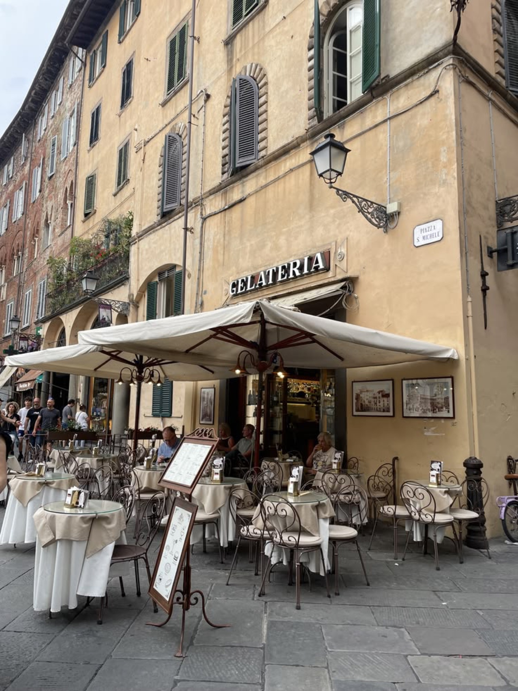
FRANCHISE IDEA
Pizza Sandwich
이탈리아에서 태어나 미국에서 떠오르는 트렌드, 빠누초(Panuozzo)
빠누초(Panuozzo)는 피자와 똑같은 도우를 쓰지만, 손에 들고 먹는 샌드위치로 재해석한 메뉴입니다. 이탈리아에서 시작해 미국에서 빠르게 떠오르고 있으며, 프리미엄 샌드위치라는 새로운 카테고리를 만들어가고 있습니다. 브런치 카페, 이탈리안 레스토랑, 피자 전문점 등 다양한 매장에 자연스럽게 어울립니다.
세 번째 아이디어는 빠누초, 피자 샌드위치입니다. 피자와 똑같은 도우를 쓰지만 손에 들고 먹는 형태라 휴대성이 좋고, 프리미엄 샌드위치라는 새로운 카테고리를 만들고 있습니다. 이탈리아에서 시작해 지금 미국에서 빠르게 인기를 얻고 있습니다. 브런치 카페부터 이탈리안 레스토랑, 피자 전문점까지 다양한 매장에 자연스럽게 들어갈 수 있다는 점이 강점입니다.
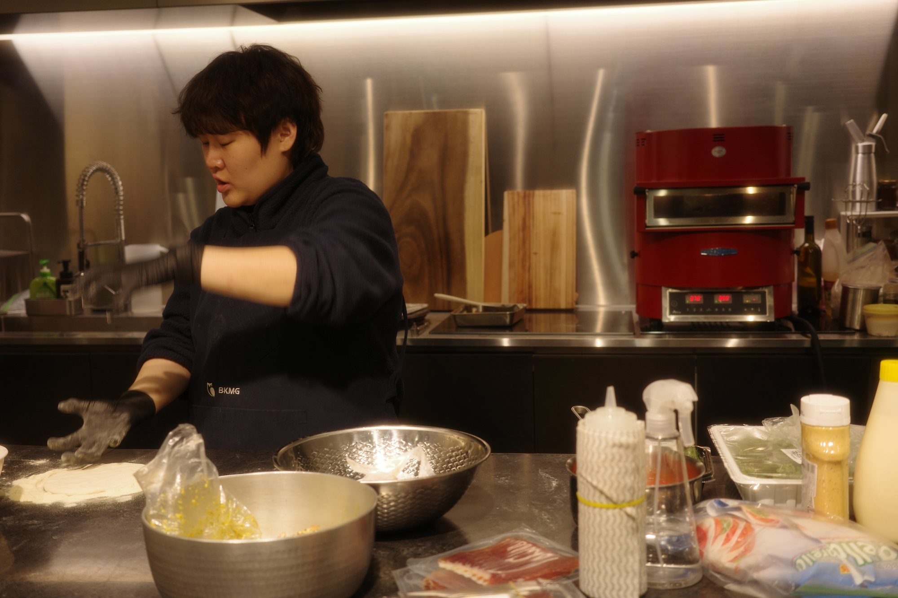
TEST KITCHEN
일산 테스트 키친으로 초대합니다
셰프가 직접 재료를 가져와 우리 장비로 맛을 확인할 수 있는 공간입니다. 출시 전, 레시피와 콘셉트를 가장 깊이 있게 다듬어 보세요.
우리는 주방 솔루션을 함께 찾는 파트너입니다.
마지막으로, 백 번 설명보다 한 번의 경험입니다. 일산 테스트 키친으로 초대드립니다. 테스트용 재료는 늘 준비돼 있어 방문 즉시 시연이 가능하고, 원하시면 셰프님이 직접 재료를 가져오셔서 우리 장비로 바로 맛을 확인하실 수 있습니다. 신메뉴 개발 아이디어부터 프랜차이즈 기획 컨설팅까지 함께합니다. 출시 전 레시피와 콘셉트를 가장 깊이 다듬을 수 있는 곳이고, 저희는 주방 솔루션을 함께 찾는 파트너입니다.
ABOUT
bkmgLab
Since 1988
주방 솔루션 B2B 전문기업
비케이엠지는 1988년부터 40년 가까이 대한민국 대표 프랜차이즈에 주방 솔루션을 공급해온 B2B 전문 기업입니다. 브랜드에 필요한 주방 장비를 한곳에서 해결하는 것이 우리의 핵심 목표입니다. 스타벅스를 비롯한 국내 최대 브랜드들과 함께해왔지만, 우리는 늘 다음 세대의 대형 브랜드를 찾고 있습니다. 다음 시대를 이끌 브랜드는 바로 지금 만들어지고 있다고 믿습니다. 전국 서비스 네트워크를 바탕으로 귀사와 함께 성장하겠습니다.
저희가 누구인지 말씀드리겠습니다. 비케이엠지는 1988년부터 40년 가까이 대한민국 대표 프랜차이즈에 주방 솔루션을 공급해온 B2B 전문기업입니다. 스타벅스, 서브웨이, KFC, 타코벨, 던킨, 애니앤스 같은 브랜드가 저희 고객입니다. 중요한 건 전국 서비스 네트워크입니다. 장비만 파는 게 아니라, 어디에 매장을 여시든 설치와 사후관리로 함께 성장하는 파트너입니다.
NETWORK
전국 어디든, 뒤에서 끝까지 서포트합니다
매장이 서울이든 부산이든 제주든, 설치부터 사후관리와 교육까지 동일한 품질로 지원합니다. 귀사가 확장하는 모든 지점에 비케이엠지가 함께합니다.
프랜차이즈에서 가장 무서운 건 장비가 멈췄을 때 아무도 와주지 않는 상황입니다. 저희는 전국 서비스 네트워크를 갖추고 있습니다. 서울, 부산, 대구, 광주, 대전, 인천, 제주까지 어디에 매장을 여시든 설치, AS, 운영 교육을 같은 품질로 제공합니다. 귀사의 확장 계획이 곧 저희의 서비스 반경입니다. 단순 장비 공급사와 저희가 다른 이유입니다.
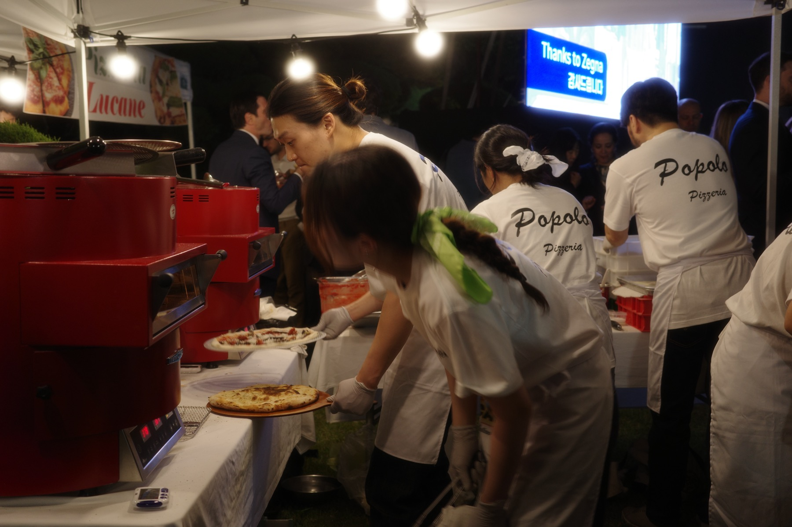
CONTACT
지금 바로
시작하세요
TurboChef Fire Oven과 함께라면,
나폴리 피자 프랜차이즈의 꿈이 현실이 됩니다.
정리하겠습니다. 시장은 열렸고, 병목은 사라졌으며, 검증은 끝났습니다. 이제 남은 건 시작하는 것뿐입니다. TurboChef Fire 오븐과 함께라면 나폴리 피자 프랜차이즈라는 목표가 현실이 됩니다. 오늘 내용에 궁금한 점이 있거나 테스트 키친 방문, 팝업 협업을 원하시면 언제든 연락주십시오. 감사합니다.